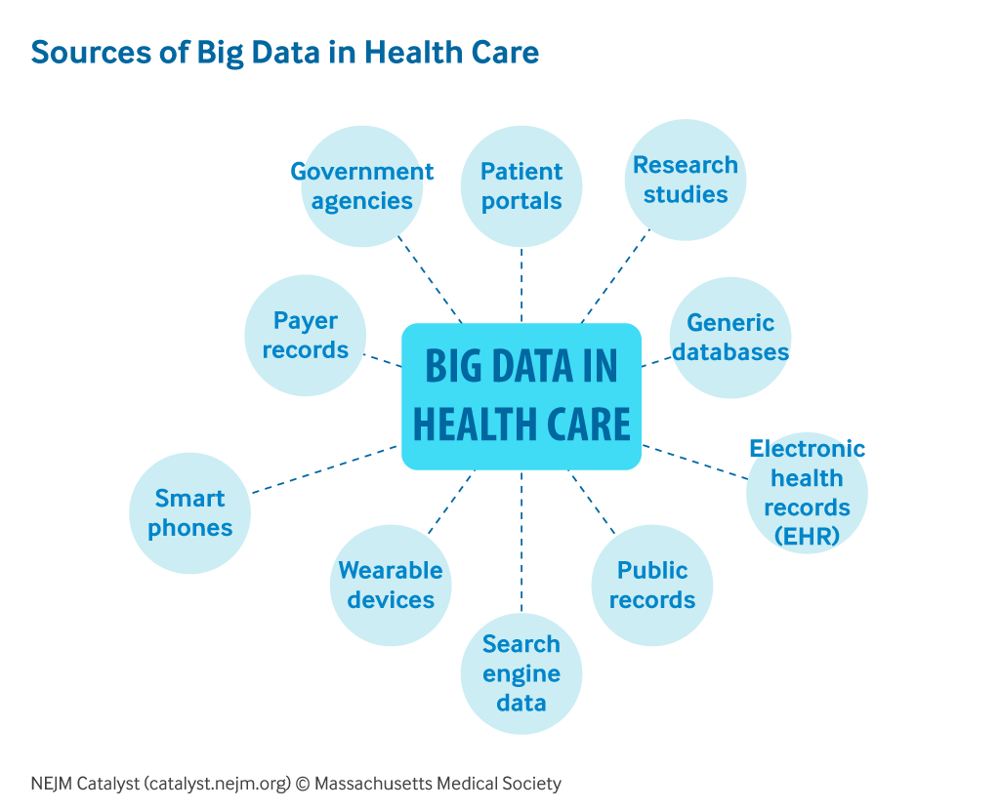
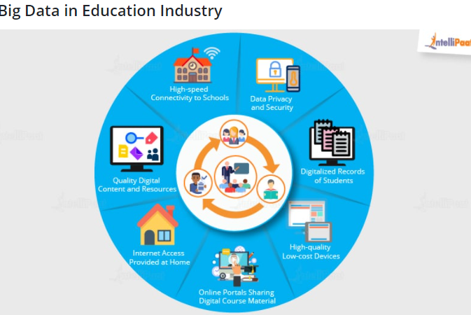

In 2012, the Obama administration announced the Big Data Research and Development Initiative, which dealt with how to use big data to address important problems facing the government . The initiative consisted of 84 different big data programs distributed over 6 departments. Notably, big data analysis played a big role in Barack Obama's successful re-election campaign in 2012. The United States federal government owns 6 out of the 10 most powerful computers in the world called "Supercomputers". The US National Security Agency is currently building a "Utah Data Center", which will be able to handle the Yutabyte information collected by the NSA over the Internet.
Big data analytics has helped healthcare improve by providing personalized medicine and prescriptive analytics, clinical risk intervention and predictive analytics, waste and care variability reduction, automated external and internal reporting of patient data, standardized medical terms and patient registries and fragmented point solutions.
Some areas of improvement are more aspirational than actually implemented. The level of data generated within healthcare systems is not trivial. With the added adoption of mHealth, eHealth and wearable technologies the volume of data will continue to increase. This includes electronic health record data, imaging data, patient generated data, sensor data, and other forms of difficult to process data. There is now an even greater need for such environments to pay greater attention to data and information quality.
"Big data very often means 'dirty data' and the fraction of data inaccuracies increases with data volume growth." Human inspection at the big data scale is impossible and there is a desperate need in health service for intelligent tools for accuracy and believability control and handling of information missed.
While extensive information in healthcare is now electronic, it fits under the big data umbrella as most is unstructured and difficult to use.
The use of big data in healthcare has raised significant ethical challenges ranging from risks for individual rights, privacy and autonomy, to transparency and trust.
A McKinsey Global Institute study found a shortage of 1.5 million highly trained data professionals and managers and a number of universities including University of Tennessee and UC Berkeley, have created masters programs to meet this demand. Private boot camps have also developed programs to meet that demand, including free programs like The Data Incubator or paid programs like General Assembly. In the specific field of marketing, one of the problems stressed by Wedel and Kannan is that marketing has several sub domains (e.g., advertising, promotions, product development, branding) that all use different types of data. Because one-size-fits-all analytical solutions are not desirable, business schools should prepare marketing managers to have wide knowledge on all the different techniques used in these subdomains to get a big picture and work effectively with analysts.
